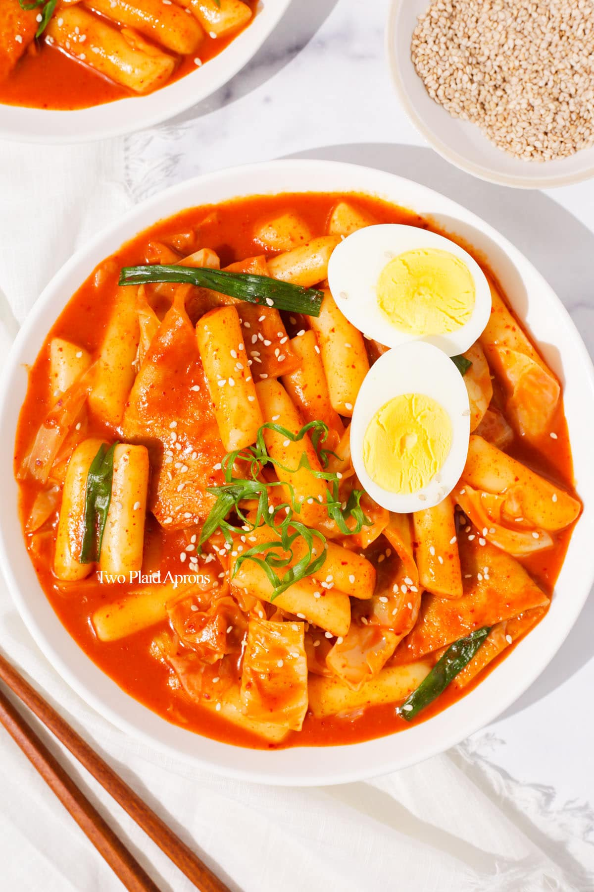

Tteokbokki

What is Tteokboki?
Tteokbokki is a popular Korean comfort food made from chewy, cylinder-shaped rice cakes cooked in a rich, sweet, and spicy sauce.
Ingredients
- 3 cups of water
- 2 dried anchovies
- 3 tablespoons chili paste
- 2 tablespoons white sugar
- 1 tablespoon soy sauce
- 1 tablespoon corn syrup
- 2 korean fish cakes, sliced
- 1/2 onion, thickly sliced
- 1 spring onion, thickly sliced
Steps
- Combine water and anchovies in a saucepan; bring to a boil and cook for 10 minutes. Remove and discard anchovies; set anchovy water aside.
- Combine chili paste, sugar, soy sauce, and corn syrup in a bowl
- Add rice cakes, onion, and chili paste mixture to anchovy water; bring to a boil and boil for 5 minutes, stirring occasionally. Add spring onion; boil 3 minutes more.
- Serve hot and enjoy!